TAP into Museums
TAP is a collection of free and open-source tools which support the creation and delivery of mobile tours.
View the TAP CMS on GitHub IMAmuseum/tap-cms
View the TAP iOS App on GitHub IMAmuseum/tap-ios
View the TAP iPad App on GitHub IMAmuseum/tap-ios
View the TAP Web App on GitHub IMAmuseum/tap-web-app
Sign up for the TourML and Tap mailing list to keep up to date with the recent developments and share your experiences about your own mobile projects.
National Museum of the American Indian
The NMAI-NY app has been created as a mothership app to deliver mobile exhibition tours of shows at the National Museum of the American Indian in New York. The initial release contains a simple ten stop tour of the C.Maxx Stevens: House of Memory exhibition. The tour delivers the artist's own perspective on the work on display along with a gallery of images from a curator's visit to her studio. Each stop has a scalable transcript of the artist's interpretation to make the tour ADA compliant. The current version of the app is available for free download in the iTunes store (App Store Download) and will be updated with new tour content as new exhibitions open. Locally the museum is making available an additional TAP authored tour on museum distributed devices of the exhibition, Up Where We Belong: Native Musicians in Popular Culture but since the content is being used under fair use guidelines, it is not available as part of the NMAI-NY download.
 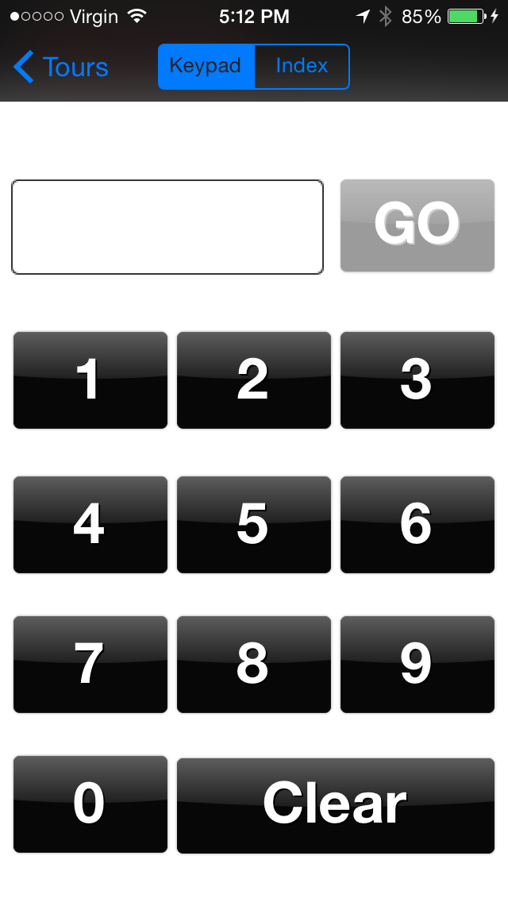
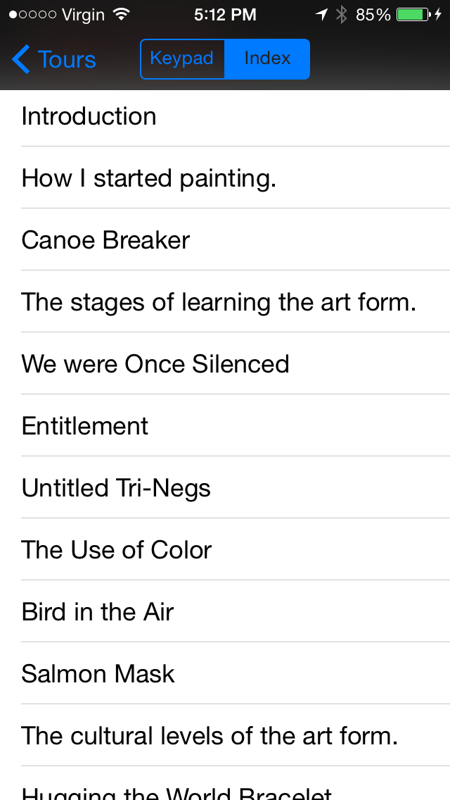
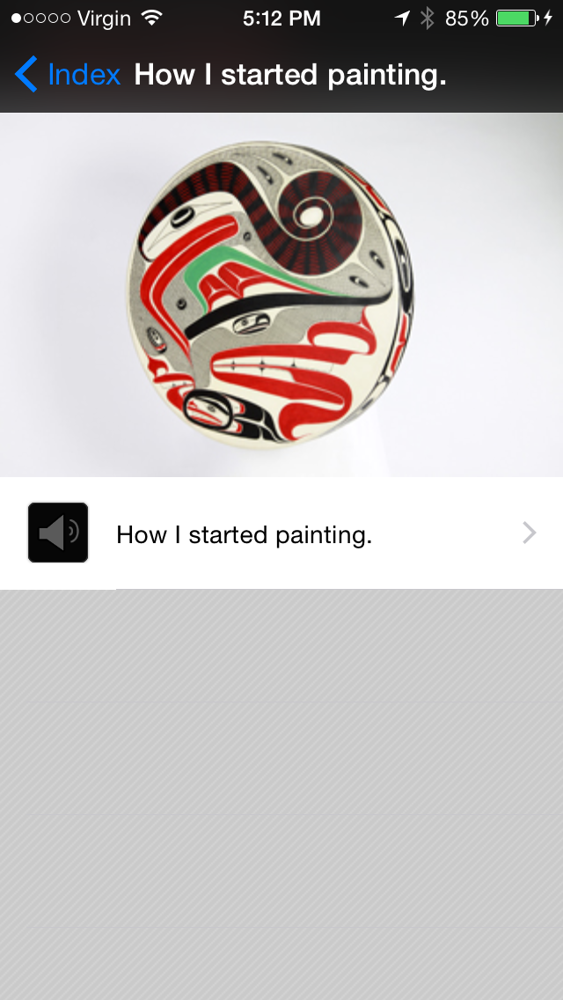
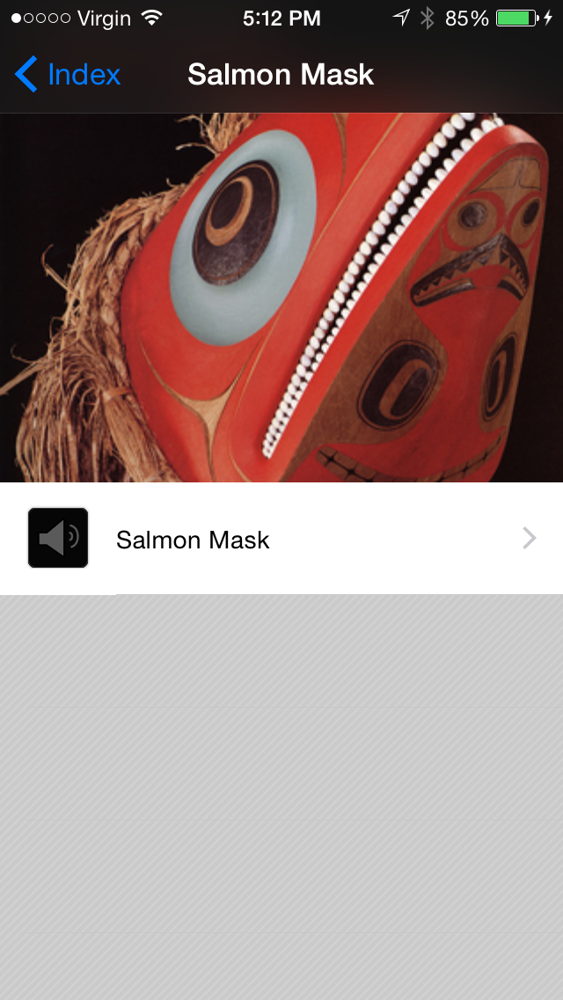
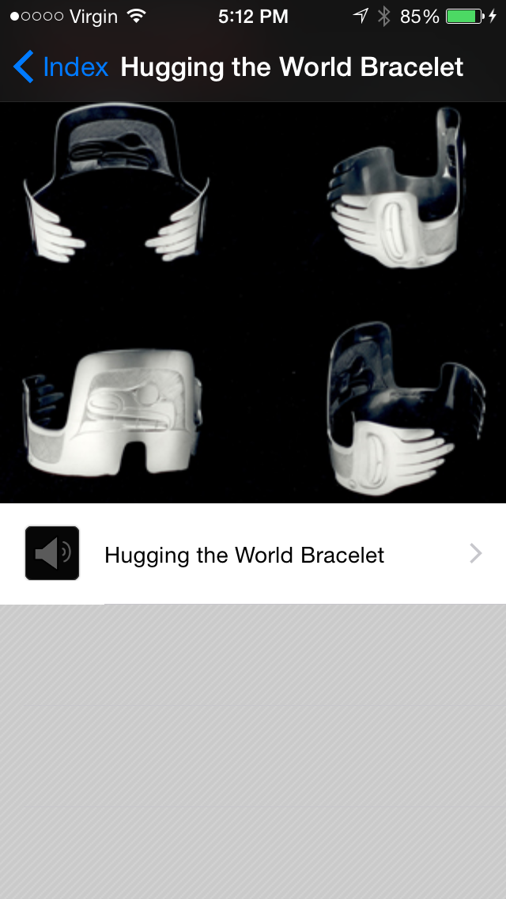
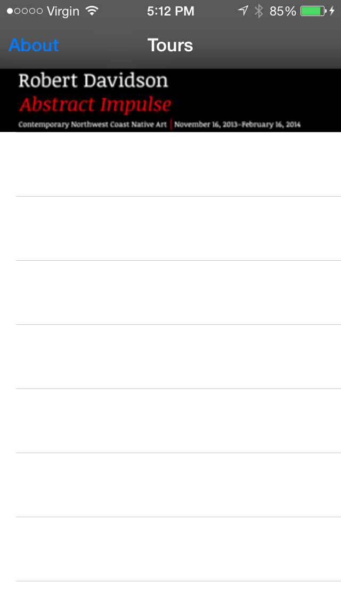
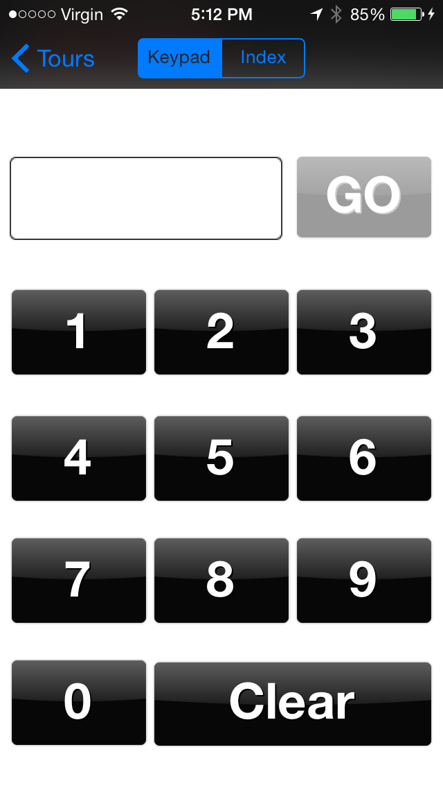
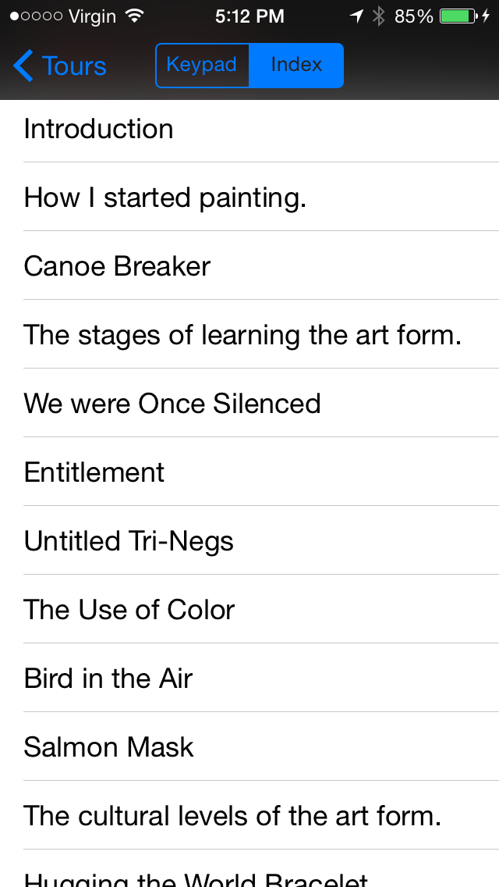
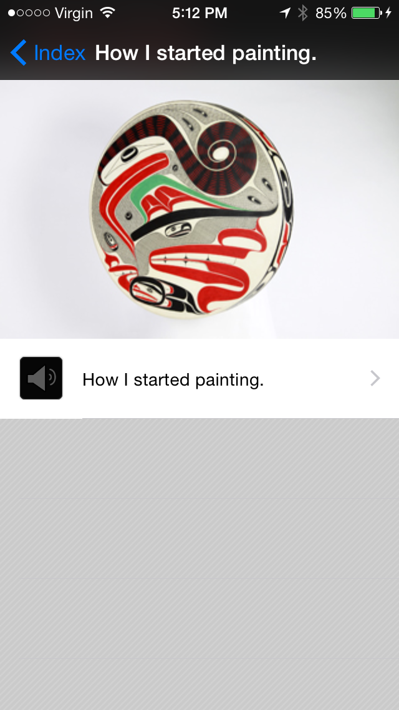
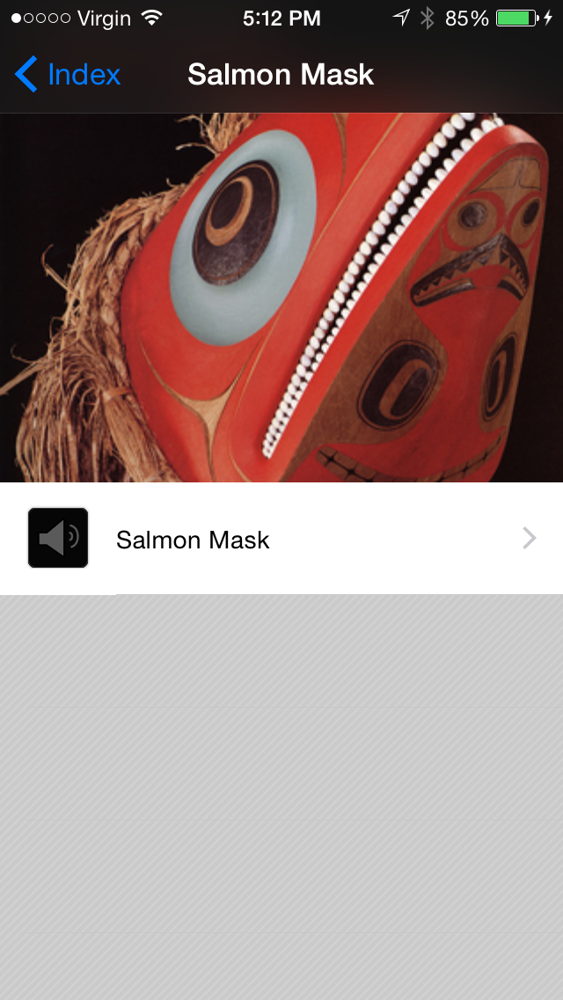
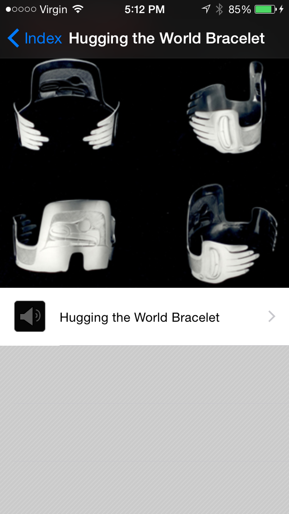
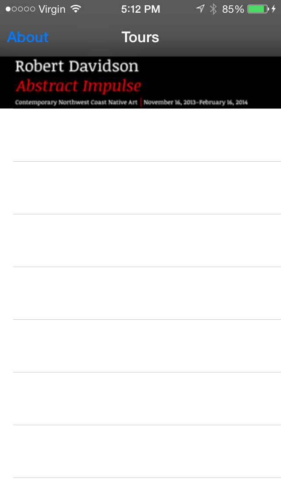